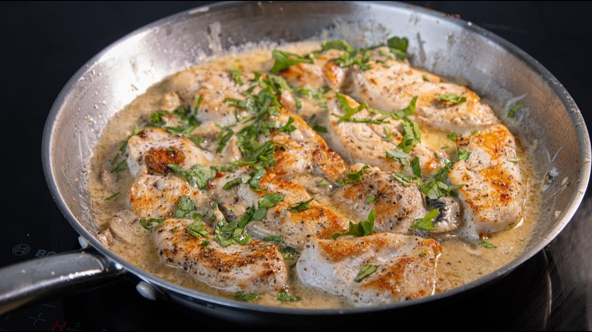

Главная
Поиск
Коллекции
Шеф-повара
Блог
Вход
Регистрация
Поиск рецептов
Найти
Категория
Все категории
Супы
Салаты
Вторые блюда
Десерты
Калорийность
Любая
До 300 ккал
300–600 ккал
Более 600 ккал
Время
Любое
До 30 мин
30–60 мин
Более 60 мин
Диета
Любая
Низкокалорийная
Вегетарианская
Безглютеновая
Ингредиенты

Курица в сливках с грибами
⏱ 35 мин
🔥 420 ккал
Вторые блюда
Салат с курицей и авокадо
⏱ 25 мин
🔥 340 ккал
Салаты
Суп куриный с лапшой
⏱ 50 мин
🔥 180 ккал
Супы
Котлеты куриные с сыром
⏱ 40 мин
🔥 290 ккал
Вторые блюда